OneTrans-V2：保留工业推荐级联，统一用户上下文、生成检索和排序训练
OneTrans-V2 来自字节跳动全球电商推荐基础团队，研究如何用一个 Transformer 支撑检索、预排与精排，同时保留各阶段的候选特征和算力预算。论文英文题名为 OneTrans-V2: Unifying Retrieval, Pre-rank, and Fine-rank with One Transformer in Industrial Recommender，唯一论文入口为 arXiv:2609.28589。事实包核验的首次提交时间为 2026 年 9 月 23 日，PDF 封面日期为 9 月 25 日，两者并不相同。本笔记按 29 页原文精读；本轮未核验到独立开源代码或项目页，工业实验数字均为作者报告。
工业推荐的检索、预排与精排通常分别训练和服务，同一用户行为序列被重复编码，监督信号彼此隔离，特征升级与工程维护也被重复执行。但直接取消级联，又可能失去排序阶段依赖的丰富候选特征；需要在保留各阶段原生候选建模能力的同时，统一能够复用的用户上下文。
1. 背景和问题
1.1 级联为什么留下，统一的对象又是什么
工业推荐首先面对的是候选规模和时延的共同限制。原文描述的物品库达到十亿量级，检索把它缩减为数千个候选，预排进一步留下数百个，精排最终决定呈现顺序。这条链路让丰富特征和复杂交互只发生在逐渐缩小的候选集合上，整个请求才能在数百毫秒内完成。因此，三级模型分别存在，不完全是历史工程包袱，也反映了不同阶段处理规模的差别。检索主要回答生成哪些候选，预排回答以很低成本淘汰哪些候选，精排则利用更充分的信息辨别最后的优先级。把三个名字删除，不代表这些预算约束随之消失。
原文指出的浪费集中在另一个方向：三阶段虽然候选不同，却都需要理解同一个用户的历史行为。传统实现每一级分别读取和编码长序列，新加一个用户特征、延长一次历史窗口、调整一次主干容量，都可能要在三套模型中重复实现、调参和发布。更深的代价是优化隔离。检索的物品生成监督、预排的点击转化监督和精排的丰富目标，都能提供用户兴趣信息，却无法直接共同塑造同一份表示。容量也被分割在多个专项模型里，工程团队难以把增加的参数用于整个推荐流程。
OneTrans 的上一代工作已经在单个排序模型里统一了序列建模与异构特征交互。行为事件被转成顺序 token，非序列特征被转成另一组 token，一套因果 Transformer 同时处理它们。但这仍是模型内部的统一，检索、预排和精排之间还是各自维护模型。V2 把分割边界从阶段之间移动到候选无关与候选相关计算之间：用户历史可以共享，阶段专属的物品、上下文和交叉特征则继续独立建模。这里的“一个 Transformer”不表示所有 token 都使用完全一样的参数，也不表示每个候选在每个阶段都消耗相同的计算。
论文以 OneRec 代表另一条路线：用生成模型直接推荐，并通过排序奖励吸收部分排序能力。OneTrans-V2 的取舍是保留级联，让统一模型仍按检索、预排、精排的顺序服务。两者追求的统一层面不同，不能仅按服务中模型文件的数量评判优劣。对拥有大量用户物品交叉特征的系统，去掉候选特征可能损害排序质量；对候选建模较轻的场景，另一种路线可能有不同优势。本文提供的是一条重用既有排序资产的工业方案，并未做足以裁定所有端到端路线优劣的公共基准比较。
1.2 检索、多目标和时间一致性构成额外约束
检索的多目标问题不能直接照搬多任务排序头。排序接收到固定候选后，可以在一次前向中同时输出点击、转化等分数；检索尚未获得候选，业务目标会改变应生成的物品集合。原系统为主业务、发现新品类和广告分别设置检索渠道，即使共用了某些特征，每个渠道仍保有自己的模型和解码过程。V2 需要让这些目标进入同一次生成，而不能只在生成结束后加几个评分头。DCGR 因而把一次交互的购买数量、消费档位、品类新颖程度和自然或广告供给表示成结构化决策，先预测这些决策，再生成语义标识。
这组决策很容易被“推理”一词误导。作者将它类比为非语言的中间推理步骤，但它没有输出自然语言理由，没有验证文本推理链，也没有进行多步环境规划。标签直接取自行为日志，训练以交叉熵和教师强制为主。购买等级表示这次交互的订单数量分档，并非用户亲自输入的意愿；发现等级是相对于用户近期历史的品类新颖程度，并非对物品质量的语义评审。理解这一区别，才能正确阅读后面的决策干预实验：它验证结构化前缀对候选分布的控制能力，而不是验证模型具备通用推理能力。
统一也不能以泄漏未来信息为代价。训练可以把同一用户一天的多次请求放在一起，但上午请求不能看到下午才发生的行为；精排具有更丰富的候选特征，检索和预排也不能在前向里偷偷读到这些尚不可得的信息。原文同时引入行为序列的因果约束、请求时间锚点和阶段可见性约束。共享表示来自相同历史的联合学习，阶段之间的监督传播则通过明确的损失实现。这与让检索直接关注精排 token，或让排序直接关注检索生成轨迹，是不同的设计。
从证据组织看，需要分别检验四件事。首先，有限计算下的小版本是否能超过原来三套模型，排除所有质量收益都来自大幅扩容的解释。其次，在架构与参数匹配的消融中，联合训练是否仍有效。再次，决策前缀能否覆盖不同业务目标，同时是否带来点击、订单和金额的权衡。最后，更大模型的实际服务吞吐是否依赖内核、精度与缓存协同优化。只有把这些问题拆开，才能判断统一带来的价值在哪里，而不会把主结果中的所有改善都归因给某一个模块。
原文也把工程维护视作独立目标：新特征或长序列升级只需在共享用户侧实现一次，能够减少多条链路分别验证的重复工作。不过，论文没有直接量化研发人天或发布失败率，因而这部分属于架构动机和潜在收益，不能与线上质量指标同样当作已测结果。
还有两类边界必须提前保留。离线检索命中按照 SID 而不是唯一物品衡量，同一标识可以映射多个物品；排序指标则在已曝光样本上计算，不包含未曝光候选或额外负采样。线上渠道归因又与全系统用户口径不同：一个统一渠道接管其他渠道的曝光后，其自身 GMV 大幅增加并不等价于平台交易额获得同样比例的净增。本文的阅读重点，是让每个结论始终绑定其候选集合、分母和实验对照，而不是把一组亮眼比例拼接成单一增长故事。
2. 方法
2.1 共享用户上下文与阶段隔离
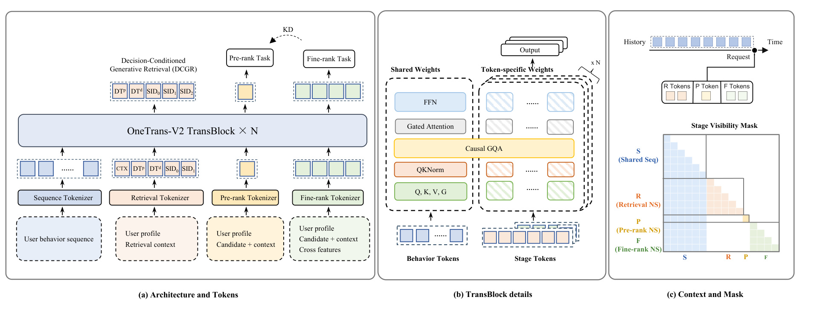
Figure 2 左侧将输入拆成四路。蓝色行为 token 由用户序列生成，检索、预排和精排分别把自己的非序列特征转为阶段 token。预排只有一个候选 token，因为它要处理数千候选；精排保留多个 token，避免把丰富候选特征压入单一向量而丢失异构关系。检索则包含上下文 token、两个决策位置和三级语义标识。中间面板强调混合参数化：行为 token 共享投影和前馈参数，异构阶段 token 使用各自的参数。因而这里的统一是模型结构、用户上下文和训练过程的统一，不能解释为所有阶段只剩一个相同输出头。
右侧矩阵的行是查询、列是键，有色格允许注意力，白格屏蔽。行为序列只能因果地读取自身；阶段 token 能读取请求时间之前的行为前缀，以及同一曝光同一阶段内符合顺序的 token；不同阶段和不同曝光之间不可相互读取。行为 token 也不能反向读取任何阶段输入。这最后一条尤其重要：如果用户历史状态随着候选而变化，它就不再是候选无关缓存，跨阶段复用的前提将消失。请求锚点把每个阶段定位在当时已经到达的最后一个行为位置，未来行为即使与当前样本存在同一训练窗口，也无法被读到。
图上虚线蒸馏箭头从精排指向预排，表示监督而非前向注意力连接。三个任务的梯度共同优化用户历史表示，但精排的专属候选特征不会通过注意力直接泄漏给预排。这个区别也说明统一带来的互助为何不要求取消阶段差异：历史表示获得更丰富的训练信号，而每个阶段仍按在线可得特征和预算独立作答。图中没有展示的运行条件是特征快照和事件到达时间必须正确；因果掩码只能约束模型读取的位置，不能修复上游已经把未来统计写入历史特征的问题。因此，原文在评估中强调曝光时刻记录特征，训练和服务都要遵守相同可见性规则。
2.2 决策条件生成检索与联合目标
每件物品的多模态表示通过残差量化的聚类得到三级 SID，每级码本有 8192 个条目，解码按粗到细进行；同一 SID 若映射多个物品，会返回该标识下全部物品。DCGR 将购买等级、发现等级和供给类型分别从检索上下文预测，再把三者 embedding 相加为并行决策 token。消费档位依赖此前的购买信息，在后一个位置预测。这样既缩短前缀，也避免任意指定独立目标的先后顺序。原文式（2）明确建模的是决策与物品的联合分布：
符号解释：$\mathcal H=(S,\mathrm{CTX})$ 是共享历史与检索上下文；$\mathbf z$ 为完整决策组合；$\mathrm{Item}$ 通过 SID 表示；$P$ 为模型条件概率。第一项学习什么交互更可能发生，第二项在这种交互条件下学习物品身份。没有额外的文本理由生成器，这是一种有日志监督的条件分解。 原文式（3）把两部分展开为：
符号解释：$oc$、$disc$、$ad$ 分别代表购买数量、发现与广告供给维度；$aov$ 是订单消费档位；$\mathbf z_p=(z_{oc},z_{disc},z_{ad})$ 是并行维度；$\ell$ 是码层级；$\mathrm{SID}_{<\ell}$ 表示已经生成的较粗层代码。并行预测是一种模型组织假设，不意味着这些现实变量在统计上绝对独立。训练时决策和 SID 都使用真值前缀监督，推理时则必须考虑预测错误传播。
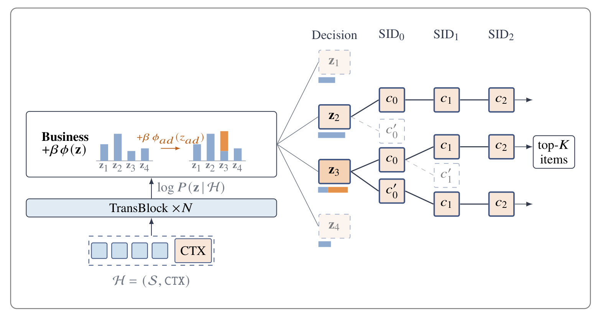
Figure 3 从下方缓存历史和上下文开始，主干输出合法决策组合的得分。图中的四个前缀只是示意，实际实现枚举合法组合，用一次前向合并原本串行的决策打分。左侧业务框给带广告取值的前缀增加橙色偏置，右侧这些前缀连同分数进入 SID 树搜索。蓝条是原来的概率得分，橙色部分反映业务偏好额外改变的排序。这里不会先武断挑一个决策，再无条件接受其物品；决策路径必须带着累计分数继续与其他路径竞争，因此一个前缀本身得分较高、后续物品条件概率很低，仍可能被剪掉。
图右侧灰色虚线节点表示束搜索淘汰的分支，实线保留路径最终提供候选给预排。业务偏置只作用在决策段，不直接改写某个物品的条件概率。这使“更倾向广告”与“在广告条件下推荐什么”成为两个可区分的控制层面。偏置强度为零时回到模型自己的前缀排序；增大强度会向业务偏好的区域移动，但仍受历史中学习到的概率约束。因此它是软偏好，并非保证某种广告比例、消费水平或交易金额的硬规则。图中也没有任何全局最优的保证，有限束宽仍可能丢失概率质量。
这一机制的部署价值是已有决策维度表达的目标可以通过在线偏置调整，无须为每次权衡新建检索渠道。但如果新目标根本不在现有决策空间，仍需增加标签与预测头并训练，不能把“现有维度内调偏置不重训”推广成任何业务需求都无需训练。生成概率来自已有曝光日志，对训练支持不足的决策组合，强行增加偏置可能引导到不可靠区域。后面的硬条件实验正说明消费档位越高不必然带来更高总 GMV，前缀可控与业务收益之间仍需在线验证。 原文式（4）的完整路径评分为：
符号解释：$\phi(\mathbf z)$ 为各维取值偏置之和，$\beta$ 为在线控制的总体强度，其余概率与前式相同；求和累计三级代码的对数概率。偏置改变保留哪些决策前缀，物品段仍用同一个模型。原文进一步将它联系到带 KL 约束的分布倾斜，但本实验没有训练独立奖励模型，也没有把它实现为在线强化学习更新。 预排使用轻量非序列特征子集，精排使用完整特征与多个 token。二者的点击和转化目标都使用二元交叉熵；以原文式（6）的预排为例：
符号解释：$\mathcal T_p$ 是预排目标集合，包含点击率和转化率；$y_p^t$ 为二元标签，$\hat y_p^t$ 为对应预测概率；$\mathcal L_p$ 是预排损失。精排在原文式（7）采用相同形式并替换阶段下标，其目标更多，本文实验聚焦核心点击与转化指标。该监督只利用已记录曝光，不能凭此认为已解决曝光选择偏差。 共享用户表示仍不能保证两级排序一致，原文式（8）让精排作为教师，用中心化后概率监督预排：
符号解释：$T$、$S$ 是教师与学生；$o$ 为各自 logit，$\mu$ 为各自均值，$\sigma$ 为 sigmoid；$\tau$ 是固定温度。均值由跨批次指数移动平均维护，动量为 0.9999，温度取 0.5。教师 logit 被停止梯度，蒸馏直接推动学生靠近教师，而不把教师头拉向廉价学生；但共享主干仍接受多任务梯度，不能据此宣称精排对学生训练完全不受影响。 原文式（9）最终联合优化：
符号解释：$\mathcal L_r$ 是决策及 SID 的生成交叉熵，$\mathcal L_f$ 为精排目标损失；四个 $\lambda$ 分别控制检索、预排、精排和蒸馏权重，实验为 0.1、1、1、1。联合训练与蒸馏是两个机制：前者让用户主干获得多任务信息，后者明确对齐两级排序分布，必须靠不同消融分别检验。
2.3 稀疏扩容与稳定化
TransBlock 使用预归一化布局，注意力和前馈两个残差分支都乘深度相关缩放。融合投影同时生成查询、键、值和门控，查询键按头执行 RMS 归一化。门控在注意力加权值之后、输出投影之前逐元素相乘，控制每个头向残差流写入多少，而非直接改写注意力分布。GQA 减少键值头，使长期历史缓存更小，三个阶段和检索的多个束都可以复用它；阶段与历史只需键值头数和头维度一致，查询头数可以不同。
前馈采用细粒度稀疏 MoE，一个共享专家始终激活，其余路由专家只选择固定数量。路由器先用 sigmoid 给每个专家独立评分，再对选中分数重新归一化并乘固定缩放系数。增加专家总量因此可以增加容量，而不同比例增加每个 token 激活的计算。这里的“有界激活量”不代表完全没有访存、通信或路由开销，更不代表从小版扩成大版后总 GFLOPs 不变。细专家、共享专家与 sigmoid 路由分别有自己的消融，不能把各自贡献简单相加为总 MoE 收益。 宽度与深度同时改变时，初始化、残差倍率和学习率必须共同缩放。原文 Table 1 给出隐层权重的合成规则，其中学习率关系写为：
符号解释：$\eta_0$ 是基础模型隐层学习率，$d_0,N_0$ 与 $d,N$ 分别为基础和扩大模型的宽度、块数；$m_d,m_N$ 是扩展倍率。表中初始化方差随宽度变为 $1/d$，残差倍率为 $1/\sqrt{2N}$。这些关系针对原文隐层规则，不能无差别套给稀疏 embedding 或所有输出层。其目的在于让激活与更新不随规模失控，而不是保证任意架构与数据分布都能零成本迁移超参数。
稀疏 embedding 使用 AdaGrad，稠密参数使用 AdamW；后者的一阶动量参数为零，所以相对 RMSProp 的关键变化包括二阶矩偏差修正与解耦权重衰减。原始多模态 embedding 直接输入历史物品和候选，省去预先计算相似度直方图，但这种设计要求主干学会跨表示空间映射。论文把它当作随容量改变的输入选择，实验显示小模型会退化，不能把该方案普遍推广为“原始特征永远优于人工汇总”。
2.4 序列原生训练与服务复用
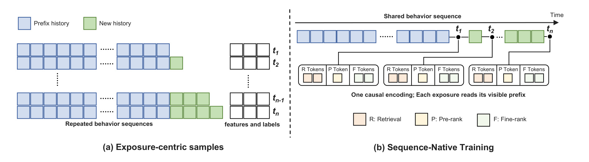
Figure 4 左侧说明按曝光组织样本的冗余：同一用户在多个时间点的样本各带一份历史，蓝色旧行为被反复复制，绿色新行为逐渐追加。右侧把样本重排成用户窗口，一条共享行为序列只编码一次，不同请求的检索、预排和精排 token 分别挂在对应时间锚点。这不是把多个曝光融合成一个标签；每次曝光的请求身份、阶段身份、候选特征和监督结果仍然保留，只移除历史的多份副本。因而节省的来源是重复用户计算和重复存储，而不是减少了应该学习的曝光事件。
图中时间从左向右，新行为只追加到尾部。第一次请求的箭头指向早期锚点，它不能沿着图上共享的长线直接看到后来的绿色行为；实现这一点依赖前面架构的可见性掩码。行为自注意力也必须因果，否则即使阶段 token 只读取前面的位置，该位置隐藏状态仍可能已经编码未来事件，泄漏会从间接通路发生。由此可见，单靠在最后一层截断读取长度不足以保证训练正确，用户主干每层的因果性与曝光锚点需要同时成立。原文使用按日切分窗口，避免一个窗口跨过评估日边界。
另一层问题是同一历史对不同请求具有不同年龄。昨天的一次浏览相对于今天请求是近期行为，相对于下个月请求则已经较旧。若把年龄直接烙进只能计算一次的历史 token，缓存会随请求过期。作者让时间信息进入请求查询与历史键的相对旋转：键只依赖事件自身时间，因此可以复用，查询依赖当前请求时间。共享没有抹掉时间差，而是把请求相关变化留在廉价查询侧。原文声称按日窗口得到训练加速，周或月窗口属于未来探索；图示本身不能证明任意更长窗口都保持同样数据调度、显存占用和优化效果。 原文式（10）刻画只追加的前提：
符号解释：$u$ 为用户，$n$ 为请求序号，$S_u^{(n)}$ 是该请求可见序列；$\Delta S_u^{(n+1)}$ 是两个请求之间到达的新增行为，$\Vert$ 为拼接。由于不向旧前缀插入行为，旧的因果状态和锚点保持有效。若生产日志会回填历史位置，需要另外处理缓存失效，不能直接假定该等式自动成立。 请求相对时间编码遵循原文式（11）：
符号解释：$e$ 是曝光，$i$ 是历史事件，$t_e,t_i$ 为其请求与事件时间；$R$ 是旋转变换，$\mathbf q^{time},\mathbf k^{time}$ 是时间通道的查询和键，转置内积形成注意力项。它依赖时间差而不是序列位置，多个固定周期表达短期与长期变化；同一曝光内 token 请求时间相同，相对旋转抵消，历史自注意力保持原设计。
在线仍顺序执行三级级联，先编码用户缓存，再执行生成检索、轻量预排和丰富精排。决策组合一次打分减少串行步数；SID 的两级 top-k 先在每条束保留局部最优扩展，再从缩小候选池选全局最优，原文指出其集合与原实现相同。注意力内核内置阶段掩码，避免显式构造注意力矩阵；投影、归一化和前馈算子融合减少小矩阵与搬运。默认服务保持 FP16 浮点特征精度，主要把较稳健的 SwiGLU 矩阵乘降至 FP8，而不是把所有输入无差别量化。原文讨论的分类器自由引导需要额外解码分支，尚未部署和评估，不纳入本笔记的已验证加速或收益。
3. 实验结果
3.1 数据口径与三级主结果
实验使用真实生产日志，沿时间顺序流式训练和评估，每个 mini-batch 先预测、再用该批更新，避免在已经训练过的数据上报告效果。特征在曝光时刻快照，标签按生产固定窗口累积；指标按日计算后宏平均。检索报告目标物品 SID 是否出现在前一个或前十个返回 SID 中，排序报告点击和转化的 AUC，以及按曝光加权的用户级 AUC。训练使用 16 张 GPU、每卡批量 2048 和 BF16，但原文没有在主结果处给出足以独立复现的完整数据规模、时间范围及所有模型超参数。日志管线沿用前作，时间窗口不同，所以绝对指标不能跨论文直接比较。
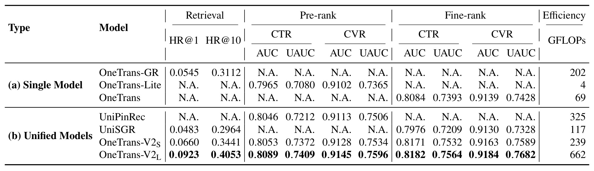
Table 2 上半部分是已部署的三套专用模型，下半部分是统一模型。横向先看检索命中率，再看预排与精排的点击、转化两类指标，每类又分全局和用户内排序；最后一列是每请求真正执行的服务计算量。原级联由检索 202、预排 4、精排 69 GFLOPs 组成，总计 275。小版统一模型覆盖三阶段却只用 239，较原级联少约百分之十三；大版为 662，约为原级联的两点四一倍。因此小版提供了较低算术预算下的质量优势证据，大版体现的是扩容后效果与实际服务效率之间的折中，不能声称大版也减少了算术量。
检索主基线的首位命中率是 0.0545，小版到 0.0660，大版到 0.0923；相对提升分别约百分之二十一点一和六十九点三六。精排转化用户级指标从 0.7428 提高到小版 0.7589、大版 0.7682。大版预排点击用户级指标为 0.7409，对照专用预排的 0.7080；精排点击用户级指标则从 0.7393 到 0.7564。这些提升来自整个配置，包括主干规模、联合训练、蒸馏和输入设计，表格自身不能把每一点进步单独归因于共享用户上下文。后续匹配容量实验才用于缩小这个因果解释范围。
比较其他统一框架时也要看覆盖任务。UniPinRec 的最近邻检索不与 SID 生成命中率直接比较，所以表中相关位置标为不适用；这不是命中率为零。UniSGR 在复现中对应检索加精排，且任务 token 由外部设定。各模型占据的阶段范围与算力不同，不能只按某一列给出无条件总体排名。尤其最后一列不是吞吐替代量，访存、矩阵规模与算子利用率会改变每秒完成请求数。主表支持统一方案在作者环境中具有较好的质量预算关系，但不提供其他硬件上相同吞吐提升的保证。
完整系统线上实验在用户维度哈希随机分桶，两组各占一半流量。对照是原三模型级联，实验是大版统一模型与其服务栈，作者报告 GMV/user 相对提升 9.74%，用户活跃天数相对提升 0.25%，同硬件预算完成全部三级链路的 QPS 为对照的 3.2 倍。这些是系统级结果，不是单独 DCGR、MoE 或 SNT 的净贡献。原文未在该结果处给出实验持续时间、用户数、置信区间和显著性数值，因此本笔记保留“作者自报”的证据等级，不把具体幅度外推到其他业务。
3.2 联合训练与蒸馏的独立证据
仅合并预排与精排时，原文 Table 3 报告预排点击 AUC 与 UAUC 相对提高 0.09% 和 0.17%，精排分别提高 0.12% 和 0.21%。该小表的四项数值完整记在这里，下图进一步加入检索并控制其梯度。联合与单独训练保持架构、参数预算、训练数据、目标与损失权重相同；单独训练的预排同样接受单独精排的蒸馏，所以该实验不会把“多了蒸馏”误算成联合训练收益。
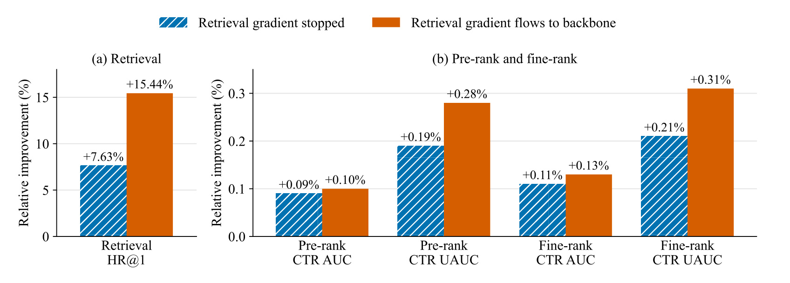
Figure 5 左面板只看检索首位命中，右面板看两级排序的点击指标，两个面板纵轴幅度不同，不能直接按柱高比较任务贡献大小。斜纹蓝柱表示检索梯度在共享用户上下文处停止，橙柱允许检索目标继续更新主干。前一种设置里，检索仍可读取由排序任务训练出的用户表示，首位命中相对单独训练提高百分之七点六三；放开梯度后提高到百分之十五点四四。它支持用户表示跨任务复用本身有价值，而检索生成监督参与塑造该表示又带来进一步增益。
右侧预排用户级点击指标从相对提高百分之零点一九到零点二八，精排从零点二一到零点三一；全局点击指标也有较小改善。这说明在这里的损失权重和数据分布下，检索目标并未明显挤压排序目标，而是与之形成正向交互。不过，梯度停止不等于完全移除检索的影响，原文脚注明确指出 embedding 表仍共享，因此蓝柱排序结果与只联合两级排序的小表略有不同。把蓝柱解释成一个绝对纯粹的“没有任何检索信息”对照，会超过实验实际控制范围。
该图的检索模型还使用与 OneTrans-GR 匹配的主干和计算预算，目的是隔离联合训练与容量变化。这一点使它比主表的大版对照更接近机制证据。其边界是仍只有作者生产数据上的设定，没有展示梯度冲突随任务权重、用户活跃度或目标稀疏程度变化的完整曲线。实际迁移时，需要检查稀疏转化目标是否被密集生成目标掩盖，以及某些人群是否在总体平均改善时受损。图中可得结论是给定条件下三个任务共同获益，不能推广为多任务加入得越多越好，也不能把这几个相对增益再加到主表最终分数上。
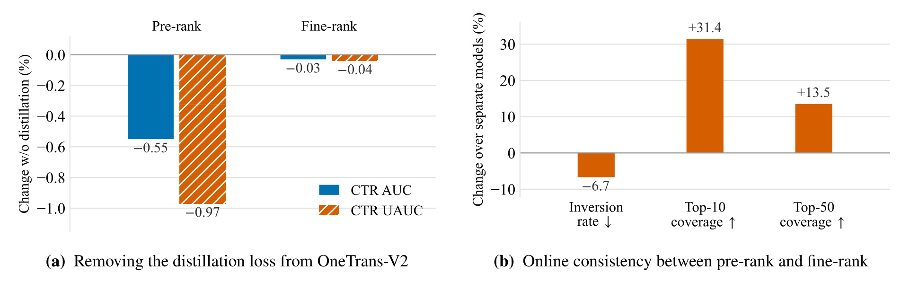
Figure 6 左侧执行另一个控制实验：保留联合训练，删除蒸馏损失，其他架构、数据和超参数不变。纵轴为删除后的相对变化，柱子向下表示退化。预排点击 AUC 下降百分之零点五五，用户级点击指标下降零点九七，精排只下降零点零三和零点零四。可见预排除了共享表示，还从丰富特征教师得到明确收益；精排变化较小与教师 logit 停梯度的设计相符，但并不等于它在任何训练随机性下都严格不变。这个消融与前图正交，前图比较联合与分别训练时双方都保留蒸馏。
右侧则比较统一模型与分别训练模型的线上排序一致性，包含共享主干和蒸馏的合并效果。逆序率是两级排序对物品对给出相反顺序的比例，相对下降百分之六点七；前十与前五十覆盖率相对提高百分之三十一点四和十三点五。这些覆盖率是两个阶段对应顶部集合的重合，统计候选范围为预排已经传给精排的物品。因此其直接证据是已传递候选上的排序分歧减少，而不是观察到了所有被预排丢弃物品的精排反事实分数。作者据此讨论少丢失优质物品的意义，但严格阅读应保留这个观测范围。
这组结果解释了为什么仅看预排自己的 AUC 不足以评判级联质量。一个阶段可以在整体二分类上不错，却在精排最看重的候选上作出不一致淘汰；而后面的精排无法召回已删除物品。蒸馏把教师对候选的软偏好提前引入廉价阶段，有助于减少这种接口损耗。不过，覆盖率提高也不能替代系统 GMV 或长期用户效果，因为教师本身可能有偏差，两级过度一致也可能减少多样性。本文没有给出这些长期反作用的完整实验，所以应把一致性视为连接机制与业务的中间证据，既不忽略，也不把它当成最终收益的充分条件。
3.3 渠道覆盖与决策控制边界
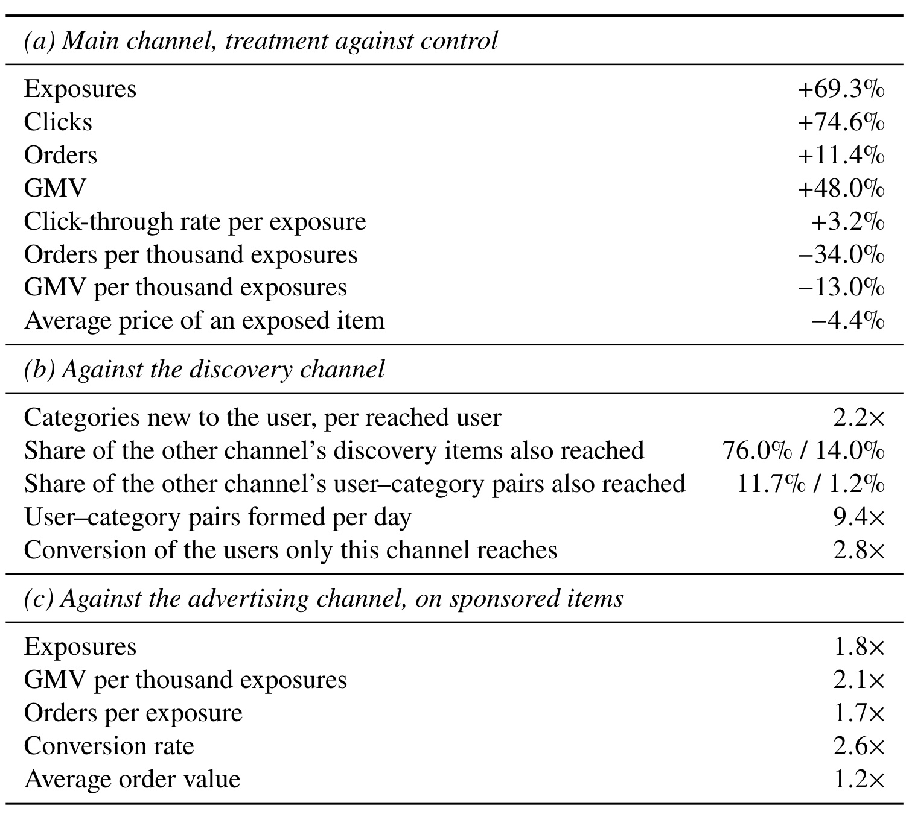
Table 4 对应检索阶段的另一组线上实验：实验组用 DCGR 接管主、发现和广告三个渠道，对照组保留原渠道，各曝光由服务日志中的检索来源字段唯一归因。上半表与对照主渠道比较，DCGR 曝光增加百分之六十九点三、点击增加七十四点六，但每千曝光订单下降三十四、每千曝光交易额下降十三。总 GMV 仍增加四十八，原因是接管后的曝光规模增长覆盖了单位曝光价值下降。它衡量的是一个新统一渠道相对于旧主渠道承担了多少业务，不能解释为全系统交易额新增四十八个百分点。
中间分区比较发现能力：每个触达用户的新类别数由原文的 2.15 增到 4.81，约两点二倍。DCGR 覆盖原发现渠道物品的百分之七十六，反向覆盖只有十四；但用户与品类组合的双向覆盖更低，分别为十一点七和一点二。这个差别表明改进不只是找到了更多完全不同商品，还在于把相近商品分配给了不同用户。每日用户品类组合数达到九点四倍，只有新渠道触达的人群转化为原渠道独占人群的两点八倍。由于人群集合和曝光分配本身不同，不能把后一个比值当成对同一批用户的随机因果转化增益。
广告分区在广告物品范围比较，曝光为专用广告渠道的一点八倍，每千曝光 GMV 为两点一倍，每曝光订单一点七倍、转化率两点六倍、客单价一点二倍。原文同时指出其广告点击率约低三分之一，因此不能概括成所有广告漏斗指标都更好。三个分区各用原生业务指标，展示一个决策空间有能力覆盖不同目标，而非给出一个可相加的统一增长率。图表还提示，量、率和归因范围需要同时保留：不同曝光归属、不同触达人群与不同物品供给共同变化时，单看一个效率指标或总量都可能误读机制。真正全系统替换后的增量应回到此前的人均实验，不能用渠道结果代替。
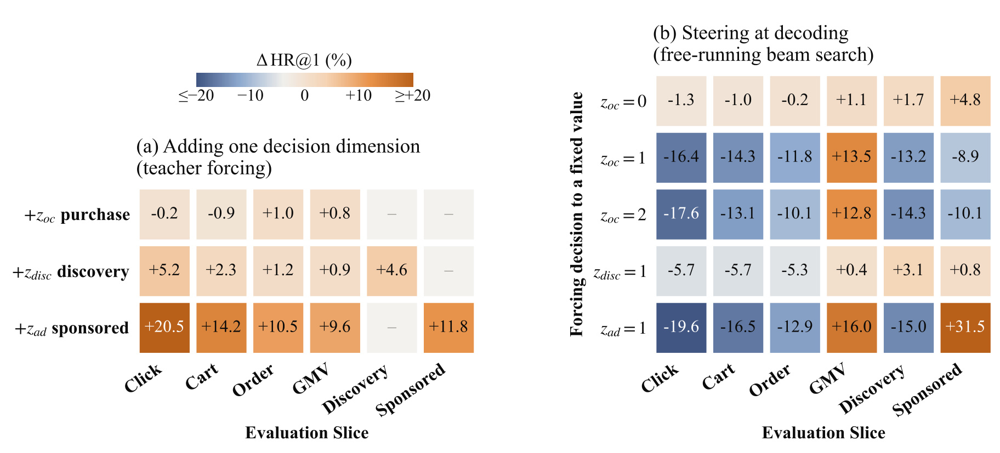
Figure 8 左侧在只生成 SID 的模型上一次加入一个决策维度，并在评估中提供真值，即教师强制。列分别对应点击、加购、订单、交易金额、发现和广告切片，单元格为首位命中率的相对变化，横杠表示没有测量，不能填成零。购买维度在已测切片的相对变化幅度不超过百分之一，而广告供给维度带来约百分之九点六到二十点五的提升。这与它约束物品身份更强一致：原文中广告交互约占百分之二十八，知道供给类型就缩小了候选身份范围。但是供应正确决策使用了待预测交互的结果信息，所以左图只测“正确前缀含有多少检索信息”，不是可部署的端到端准确率。
右侧换成自由束搜索，只把其中一个预测维度强制固定，其余维度继续正常生成。广告取值固定为广告后，广告切片首位命中提高百分之三十一点五，交易金额切片提高十六，但点击切片下降十九点六；强制多订单取值会提高交易金额切片、损害点击切片。这些方向变化证明解码器没有忽略决策前缀，也同时证明前缀控制存在目标间代价。颜色被截断在正负二十范围，超过范围的真实数值必须读格内文字，不能用颜色深浅重建比例。两面板实验程序不同，更不能拿左侧真值增益减右侧干预损失，计算所谓预测误差成本。
发现强制的离线变化较小，原文解释为相关新类别交互本来就占大约四分之三，能被改变的请求更少。这不与线上发现效果较大直接矛盾，因为离线目标是复现日志里的特定物品 SID，线上目标是用户是否接触或购买有价值的新类别，推荐另一个合适物品也可能形成业务收益。该图的作用是把信息含量、可控制性和业务增量三个命题分开：前两个有专门实验，第三个仍必须用线上合适分母验证。对实际复现而言，应同时记录自然预测和强制条件结果，避免把未来标签作为输入的优越表现误报成正常服务性能。
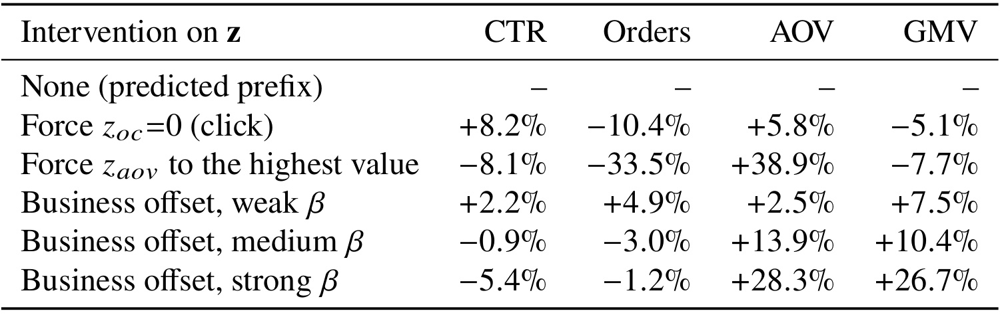
Table 5 固定已经训练好的模型，只改变解码时的决策处理，对照是自然预测前缀。统计范围为归因给 DCGR 的曝光，订单按每次结账的主订单计数，而不是结账拆出的子订单，客单价等于交易金额除以主订单数。强制非购买取值后，点击率提高百分之八点二，订单下降十点四，交易金额下降五点一；强制最高消费档位使客单价提高三十八点九，订单却下降三十三点五，交易金额下降七点七。这直接否定了把“更高消费等级”作为必然提高总价值策略的简单推断。
弱、中、强偏置提供不同权衡。交易金额变化从正七点五，到正十点四，再到正二十六点七；点击率则从正二点二逐渐变为负五点四。强偏置看起来在该渠道口径得到较高金额，但并不表示多目标同时改善，或偏置越强越适合长期业务。原文没有提供可复用的具体强度取值和连续响应曲线，也没有展示更极端强度的行为，所以不能将三行外推成一个无限单调函数。这是给定取值下的在线观察，支持软偏置比完全替换前缀更能保留用户条件概率，但最适合的权衡仍依赖业务约束。
表注的曝光缺口影响解释。只有强制最高客单价那一行记录了曝光数，归因曝光下降百分之十九点四，其余行没有曝光列。因此除了该行，不能依据订单总数直接推出每曝光购买概率的变化，也不能把渠道总量指标混成用户人均指标。与前表一样，检索来源归因可能随解码策略变化。表中最高交易金额增益只适用于该实验的渠道曝光统计，不能替换完整系统的百分之九点七四。最有价值的信息是错误的硬控制会同时改变被触达物品、曝光数量和漏斗转化，评价在线决策必须保留这些连接，而不能只盯客单价一列判断成功。
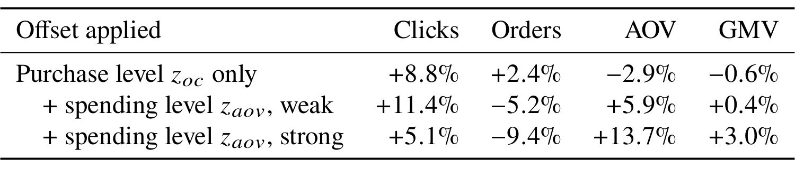
Table 6 用另一组检索阶段实验将统计范围扩大到每个用户的全部曝光。列是点击数、订单、客单价和交易金额的相对变化，其中点击列是数量，不是上一表的点击率。只在购买数量维度施加偏置，点击增加百分之八点八、订单增加二点四，但客单价下降二点九，交易金额下降零点六。这说明提升购买数量信号不一定提高交易价值，购买数量与每单价值必须分开表达。后两行保持购买偏置不变，加入消费档位偏置，目的是观察这一额外控制能否改变金额方向。
弱消费偏置下，订单减少百分之五点二，客单价增加五点九，交易金额小幅增加零点四；强一些时订单减少九点四，客单价增加十三点七，金额增加三。原文因此把两个决策维度视为互补：它们分别调节订单量与订单价值，合成结果取决于权衡。这里的强设置也不是上一表强设置的可直接对齐复制，实验、对照和曝光范围均有差异。用上一表的二十六点七减去这里的三，不能得到某个“渠道外损失”，因为不存在这样一个共同基线和完整可加分解。
对推荐系统读者，这张小表比单个总增长数字更能暴露目标设计的代价。即使最终金额方向变正，订单数量减少仍可能影响不同价格带商家、购买频次和用户体验，而本文没有报告这些长期切片。也不能把点击增多等价为用户满意度改善，因为曝光规模、物品结构和点击倾向都可能变化。原文并未给置信区间，零点四这样的小幅变化尤其需要更多统计信息才能判断稳定性。本表能支撑的是数量和消费水平拆分具有可操作的业务意义，以及软偏置可以在全曝光口径形成可观测权衡；它不能支撑将某一行参数直接搬到其他推荐场景并预期相同收益。
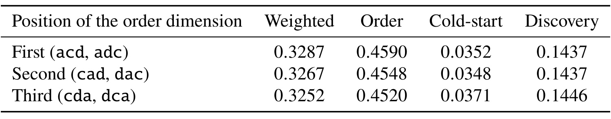
Table 7 来自较早配置，使用订单、冷启动、发现三个二元维度，而非最终版本的四维决策空间。作者枚举不同串行顺序，按订单维度处于第一、第二、第三位置分组，每组平均两种排列。指标是自然生成前缀下的前一百二十八位命中，第一列按交易价值加权，后面是各目标切片。订单维度排最前时，加权命中为 0.3287、订单切片为 0.4590；排最后时分别为 0.3252 和 0.4520。数据表明即使表达同样一组二元变量，解码位置也会偏向某些目标。
冷启动切片在订单靠后时从 0.0352 变到 0.0371，发现切片从 0.1437 到 0.1446。因而最前位置对订单更有利，不等于每一类目标同时更好。对于没有明确依赖关系的维度，任意安排顺序实际上引入了一个业务偏好，而它可能隐藏在模型实现细节里。最终方案把这类维度相加放在同一位置，只有消费档位这种具有购买数量依赖的变量放在下一位置。这既缩短前缀，也让目标优先级更多由明确的业务偏置控制，而不是被串行顺序暗中决定。
这项证据需要保留两点限制。首先它是早期配置，不能把其中冷启动切片的数值写成最终线上模型的冷启动提升；最终架构并没有在这里给出一张同设置下并行相加对全部排列的完整结果表。其次，各维度相加并不证明完全消除所有目标竞争，预测头共享上下文、训练频率和损失权重仍可能影响优先级。因此合理结论是原文确实观察到了任意串行化的顺序效应，并据此采用更简洁的结构，不能再扩大成并行建模在所有依赖结构下都是最优。原文还报告把购买数量与消费水平合成单个交易额 token 会让交易价值加权首位命中下降百分之九，进一步支持保留两者的语义分工，而不是只用一个金额标签替代。
3.4 容量、稳定性与多模态边界
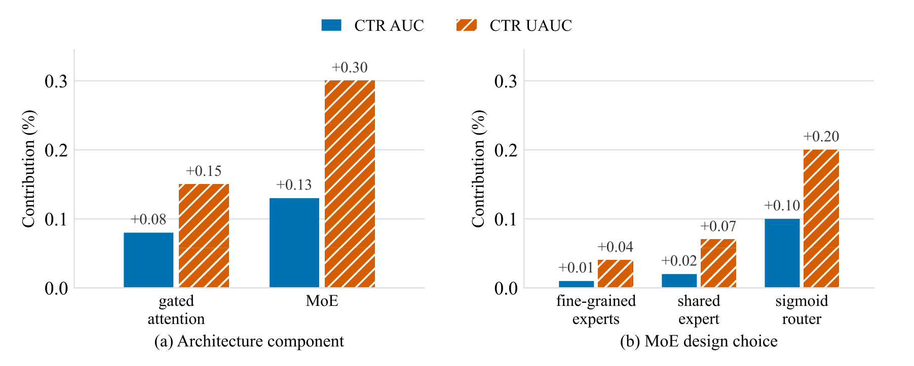
Figure 9 左面板比较大版精排中的门控注意力与稀疏专家前馈，每组蓝色为点击 AUC、橙色为用户级点击指标。门控相对于传统注意力的相对贡献为百分之零点零八和零点一五；稀疏专家相对于计算量匹配的稠密前馈贡献为零点一三和零点三。后者的重要条件是匹配计算量，因此它支持在相近激活算术预算下更大总容量的价值，而不是简单比较一个更大网络和更小网络。原文另说明全多头注意力改成 GQA 后精排质量基本不变，但没有把这一点画成额外的收益柱，不能凭图给 GQA 编造数值提升。
右面板逐项改变专家内部设计。细粒度专家相对于同总参数量的较少宽专家，带来百分之零点零一和零点零四；保留共享专家相对于移除它，带来零点零二和零点零七；sigmoid 路由相对于 softmax 路由，带来零点一和零点二。三组对照不同，且每次都在其余结构固定的模型上改变单项，作者明确强调它们是独立消融，不是把左侧专家收益分解成三块。把右侧用户级数字相加再与左侧零点三比较，会错误假定组件间没有相互作用。
从机制看，路由器的相对贡献最大，与其避免专家分数彼此强制竞争的设计相符；但这仍不足以证明收益唯一来自某种专家分工，论文没有同时展示专家负载、激活分布和路由熵随训练变化的完整诊断。细粒度专家的全局增益很小，解读时更需要注意波动量级。作者在附近给出重复运行的典型点击 AUC 与 UAUC 波动约为百分之零点零零六和零点零一二，作为判断这些微小差异的参照，但它不是针对每根柱子单独估出的置信区间。对工程移植而言，选择专家配置还必须考虑实际访存和批量调度；这张图只报告质量贡献，并不证明稀疏专家在任意硬件上比稠密前馈更快。
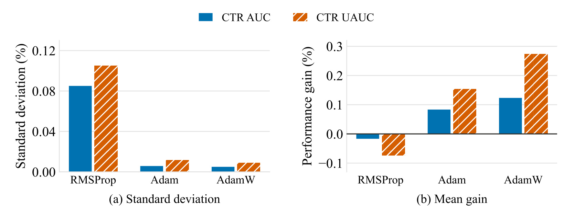
Figure 10 同时画出三次运行之间的标准差和模型增宽后的平均收益。左图纵轴是百分比标准差，越低说明重复训练更稳定；右图纵轴是增宽的相对质量变化，零线以下表示扩大模型反而退化。RMSProp 在作者调好的生产超参数下，点击 AUC 标准差为百分之零点零八五，用户级指标为零点一零五，增宽没有获得收益。换为原文定义的 Adam 后，这两项波动降到零点零零六和零点零一二，增宽用户级指标开始获得约零点一五的相对提升。
这里的 Adam 一阶动量系数为零，二阶系数与原 RMSProp 衰减相匹配，学习率和稳定项保持一致。因此不能把变化解释成“新增动量更好”，作者控制的主要差异是二阶矩偏差修正。初期二阶矩估计偏小会抬高有效步长，修正它可以减轻早期更新不稳定。再加入解耦权重衰减成为 AdamW，增宽平均用户级收益接近百分之零点三，而标准差继续维持较低。这个顺序把偏差修正与权重衰减的角色区分开了：前者主要改变稳定性和能否有效扩宽，后者进一步提高扩宽后的平均表现。
三次运行让图中的稳定性结论比只展示一次最佳结果更有依据，但样本仍少，而且图示均值没有完整置信区间。它不能证明所有 RMSProp 配置都无法训练大模型，也不能替代针对其他推荐任务的优化器搜索。作者使用的是自家部署模型调过的基线，而不是宣称穷尽每一种可行学习率和衰减组合。与后面的归一化、参数化实验比较时，也要留意窄模型参照不同，不能从不同图各取一个最大增益相加。本文最有说服力的工程信息是扩容失败可能先表现为优化不稳定，判断容量是否无效之前，应检查更新尺度、早期有效学习率和权重范数，而不是仅扩大训练资源再重复相同不稳定配置。
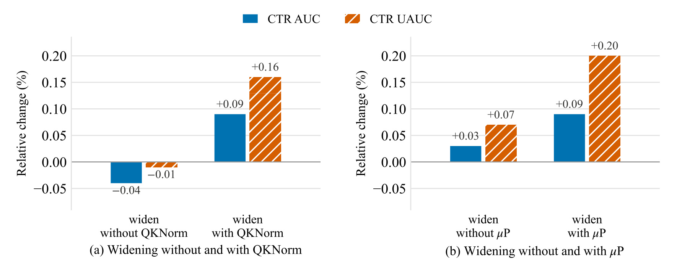
Figure 11 的两个面板各自研究一种稳定化措施。左侧移除查询键归一化时，模型增宽使点击 AUC 和用户级点击指标相对下降百分之零点零四和零点零一；加入后，同样增宽对应正零点零九和正零点一六。查询键范数在训练中增长会改变注意力 logit 的尺度，归一化将其控制住，减少 softmax 过度集中。图支持它在这个扩容环境里帮助释放容量收益，但并没有把注意力集中程度和最终指标之间建立逐样本的因果测量，因此机制解释仍应看作与设计一致的证据。
右侧保持原来宽度调好的超参数，标准参数化下增宽的相对收益只有点击零点零三、用户级零点零七；采用宽度相关参数化后，收益变成零点零九和零点二。这里的意义是共同调整初始化和更新尺度，减少宽度改变后重新搜索超参数的需要。不能把它缩成一个单独的学习率衰减技巧，因为原文规则同时涉及初始化方差与更新尺度。也不能认为它保证所有新规模的最优超参数严格相同，实验验证的是论文给出的主干扩宽方案和生产目标。
尤其需要保留图注的比较边界：每个面板都使用相应构造的窄模型作为参照，左右面板以及前一张优化器图的收益并非同一组可交换分母。左侧用户级零点一六与右侧零点二不是“参数化比归一化多零点零四”的公平比较；两者解决的是不同训练尺度问题，也可能有交互作用。对复现实验，合理做法是先固定窄模型基线和数据流，再分别控制有无技术的扩宽路径，报告每条路径绝对指标、波动和训练成本。本文没有给出全部联合交互矩阵，所以最多说明这些技术各自在匹配实验下有帮助，不能据此构造一个把所有柱子加总的总收益预算。
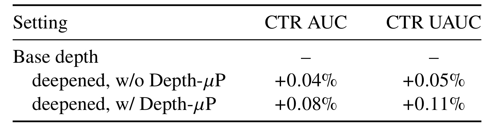
Table 8 把前面的宽度问题换成深度问题。基础深度作为参照，增加 Transformer 块但不使用深度参数化，精排点击 AUC 相对提高百分之零点零四、用户级指标提高零点零五；相同增深结合 Depth-μP 后分别提高零点零八和零点一一。表中基础行的横杠表示参照变化，不是指标不存在或模型无法预测。因为表只报告相对增益，没有给出基础深度的绝对 AUC，不能从这三行恢复全部模型分数，也不能把它与主表大版的某一绝对指标混合计算。
它对应方法章的两类缩放：残差分支倍率随深度增加而减小，隐层学习率也按深度倍率的平方根缩小。只降低残差输出可以约束初始前向信号，却未必约束训练时多分支相关更新的累积，因此需要同时调整更新幅度。表中差异与该动机一致，说明在作者的增深范围内，额外层数能更有效地转化为质量，而不是只把同一套优化配置原封不动叠高。与稀疏专家增加总参数不同，增深通常会增加顺序依赖和实际计算，它的质量改善并不自动等价于服务性价比改善。
证据边界也很明确：这是一张小规模的机制对照，未展示多种深度、同算力替代方案或每个点的重复运行区间。因此它不能确定最佳深度，不能证明随着块数持续增加就会不断改善，也不能证明深度参数化已消除所有梯度稳定性问题。迁移时应同时检查训练发散、收敛速度、每请求时延和缓存大小，尤其三级模型共用主干后，新增层数的代价会作用到多个阶段。原文提供了一个有依据的扩深方法，而没有交付独立于数据和服务预算的通用规模选择法则。把这层限制保留下来，才能将稳定化实验用于设计下一轮受控扩容，而不是把正向小数值当作无限扩深的许可证。
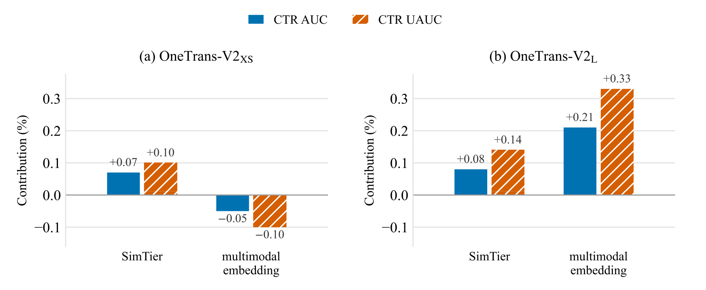
Figure 12 对比两种多模态信息注入方式，并明确展示了一个负结果。每个面板的参照都是不输入多模态表示的同规模模型，两组柱是各自单独添加一种输入的独立实验。SimTier 先计算候选与历史物品的余弦相似度，再汇总成直方图输入；另一种方法直接把原始多模态 embedding 送入候选和历史表示。小规模 XS 中，直方图方式的点击 AUC、UAUC 相对贡献为百分之零点零七和零点一，原始表示却为负零点零五和负零点一。这不是“不显著提升”，而是原文报告的指标退化。
大规模 L 中，直方图仍有正贡献，分别为零点零八和零点一四；原始表示则达到零点二一和零点三三，超过预计算汇总方式。两个面板方向翻转，反映输入设计与可用容量有耦合。原文提出的解释是假设：预训练多模态空间与模型学习的物品空间不同，小模型可能不足以学好跨空间映射，预计算相似度替它完成一部分结构化处理；大模型能够自己学习该映射，因而保留原始信息更有价值。这是合理机制解释，但作者没有用额外表示对齐实验排除所有优化或正则化因素，不能写成已经完全证明的唯一原因。
XS 的训练计算约比默认大版便宜四十六倍，这一尺度描述不是主表 S 版的服务 GFLOPs，更不能把 XS、S 和 L 混成两个模型。图中的收益也不是把直方图与原始 embedding 同时输入的组合增益，两个柱组不可相加。对实践最直接的启发是：当预算只允许很小主干时，保留经过验证的相似度汇总特征可能更稳；扩容以后，应重新比较这一选择，而不是永远继承小模型时代的特征结论。该判断仍限于本文生产数据的多模态表示质量、标签和主干结构，没有证明任意原始视觉或文本向量都会在大模型上带来相同改善。
3.5 训练与服务成本
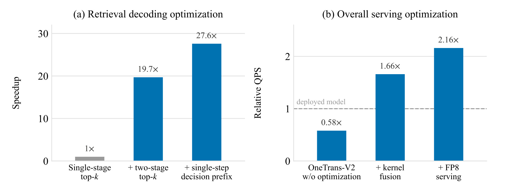
Figure 13 左图以作者自己的单级 top-k 解码实现为一倍基线，加入两级 top-k 后，在相同线上时延预算下吞吐达到十九点七倍，再把决策组合改成单步打分后累计达到二十七点六倍。它不是相对原线上完整检索模型，更不是三级系统的总请求吞吐。单请求束搜索时延因两级 top-k 缩短约二点三倍，吞吐提升却更大，原因是缩小中间候选池后能在时延约束内装入更大批量。原文说优化前 top-k 占检索推理时间约百分之九十四，说明这一高倍率来自非常具体的实现瓶颈。
右图的分母完全不同：它以已部署精排模型的吞吐为一倍，统计统一大模型的精排任务。未做服务优化时只有零点五八倍，融合内核后达到一点六六倍，再采用 FP8 前馈服务后达到二点一六倍。图上后两步是累计配置，不是两个独立倍率，所以不能再把一点六六乘二点一六。更不能将右图的二点一六与左图的二十七点六相乘得出全链路结果，因为它们对应不同阶段、不同基线和不同瓶颈。论文另报告跨三级共享用户编码在全部阶段优化基础上增加约一点五三倍效率，而全三级请求的实测 QPS 是三点二倍，应直接引用该系统测量值。
这种分层报告解释了为什么大版每请求算术量更多却能更快：更多计算不必然意味着更低 GPU 吞吐，当原实现大量时间花在重复编码、小矩阵、数据搬运和搜索选择时，利用率改善可以覆盖算术增加。但图也显示，没有共同设计的服务栈，统一大模型精排其实更慢。因而方法效果和服务效率不能被拆成互不相关的两句宣传，实际收益依赖实现。图中未给出每个设置的绝对时延、最大批量、GPU 型号和资源占用的完整清单，跨环境复现仍需重新测量。把这些缺项明确记下，比计算一个不存在的综合加速倍数更能指导部署评估。
SNT 的训练效率另有独立对照：相同硬件预算下，按日用户窗口共享序列编码，相对按曝光样本训练达到 4.4 倍加速。日边界限制了复用范围，是为了与逐日评估保持可比；周或月窗口可能进一步加速，但作者留作未来工作，不能写成已经测得结果。序列特征存储减少 95%，同一用户非序列特征相邻存储后更易压缩，该部分存储约减少一半。这些是数据组织与训练端指标，不得与在线 QPS 相乘。它们还依赖用户窗口内曝光重复程度，低活跃用户或极短历史场景未必有同样收益。
4. 总结
4.1 我的判断
本文最值得保留的是统一边界的选择：候选无关的用户历史承担跨阶段复用，候选相关特征继续保有各自表达与计算预算。它没有要求工业系统一次性丢弃丰富的精排特征，也没有把所有任务强制变成相同的生成输出。对于已经拥有成熟三级链路的团队，这种结构能把一部分维护、容量与监督从阶段孤岛中集中起来。小版低于原级联算术预算仍获得更好离线指标，以及匹配架构下联合训练的消融，让这一主张不只依赖大模型本身更强的直觉。不过，大版的线上结果仍然是模型与服务栈一起替换的整体效果，不能独立归因给统一二字。
DCGR 的价值在于为检索目标提供了结构化、可调的决策空间。它将购买数量与消费水平分开，把独立维度并行组织，再在搜索时调节前缀优先级；这种设计比为每个目标另建一条解码渠道更容易共享模型计算。与此同时，原文的负结果也很重要：最高消费档位的硬条件会降低订单和 GMV，原始多模态向量会损害小模型。两者共同说明，可控性和信息丰富度不自动转化为业务价值，需要容量、日志支持和目标约束配合。将这篇论文概括成自然语言推理推荐，反而会遮蔽这些最实用的技术条件。
4.2 证据局限与复现优先级
首先，数据来自私有生产系统，完整样本规模、时间范围和模型配置披露不足，且没有核验到开源实现。外部读者能复现机制，但难以直接复现作者的具体收益幅度。其次，系统级线上结果缺少实验持续时间、置信区间和重要人群切片，百分之九点七四与零点二五应当按原文自报记录；这并不否定结果，只限制对稳定性和外部可迁移性的判断。第三，检索以 SID 命中衡量，碰撞会把多个物品合并到同一标识下，排序又使用已曝光样本，无法单靠这些离线结果解决全目录覆盖或曝光选择偏差。
第四，渠道归因与用户全曝光是不同统计对象。统一渠道接管流量会改变总量分母，强偏置还会改变曝光结构；缺少曝光数时，订单总量不能还原每曝光概率。第五，多任务共享可能带来未展示的人群冲突、目标竞争与更新耦合，当前平均正收益不是所有新目标加入后都安全有效的证明。第六，扩容收益依赖优化稳定化和内核实现，原始大模型未经优化的精排吞吐低于旧模型，缺少对应服务能力时不能照搬最终加速结论。
后续复现应先验证因果与缓存一致性：构造同用户多请求、未来行为追加及不同阶段特征的对照，确认离线批处理和逐请求计算得到相同可见前缀，防止把数据泄漏误当成联合学习增益。接着在相同容量、特征与损失下分别控制联合训练和蒸馏，记录绝对 AUC、用户切片及重复运行波动；这能判断收益究竟来自共享监督、学生对齐还是扩容。然后以全用户口径评估偏置强度，保留曝光、订单、客单价、金额和体验指标，明确业务约束，而不仅寻找渠道内最大 GMV。
服务复现则应报告每阶段绝对时延、吞吐、显存和最大可用批量，再实测三级端到端吞吐。这样可以发现收益是否来自搜索选择瓶颈、算子利用率或历史复用，并避免把不同实验倍率相乘。最后在至少两档容量下重新比较原始多模态表示与相似度汇总，检查负结果能否重现。上述顺序首先保障可比与正确，再衡量可迁移收益；它比直接复制一个最大规模配置更有利于定位这套架构真正适合本地系统的部分。